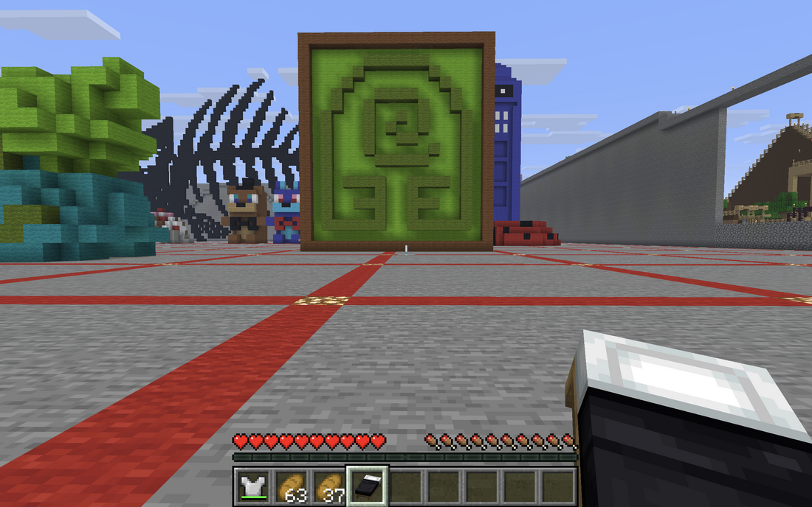
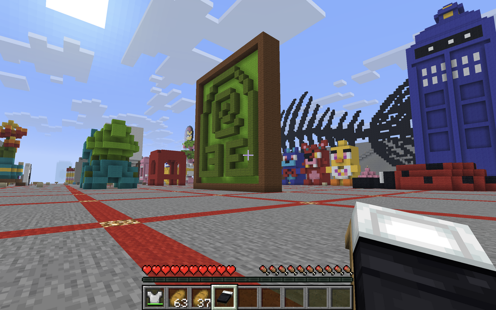
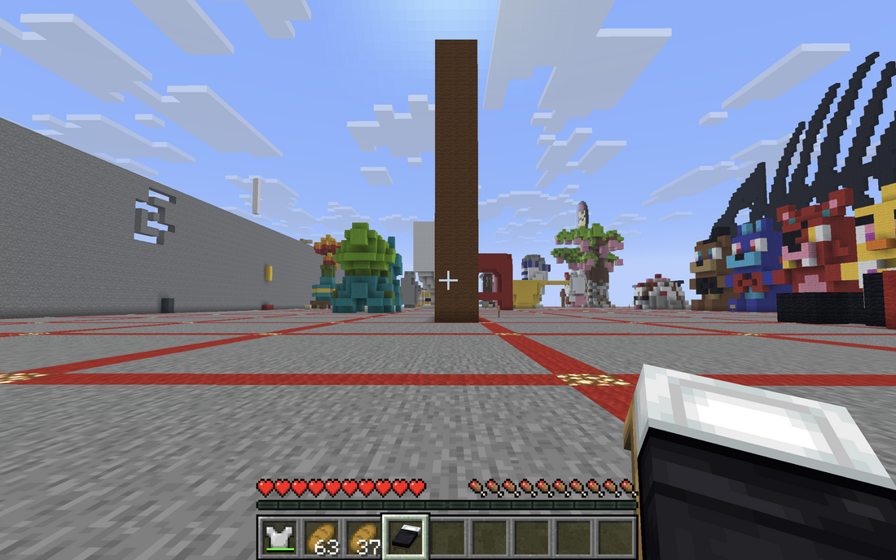

Most people aren’t aware, but Minecraft’s “sandbox” environment has many uses, one of which is as a tool for creating art. Players have limitless possibilities to build or design anything and everything they want, providing an abundance of in-game materials to experiment with in their work. In this piece, I decided to stick with colored wool and create the beloved Earth Kingdom symbol from Avatar: The Last Airbender.


